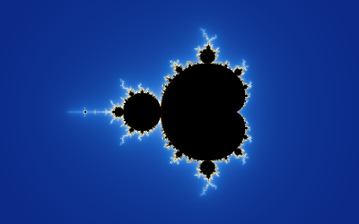
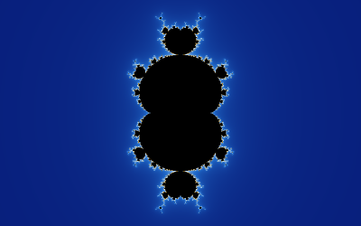
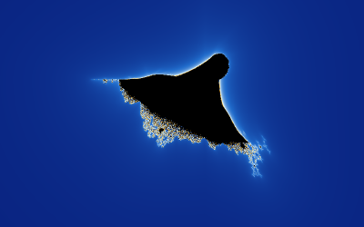
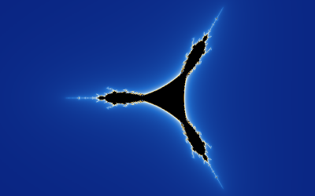

Every picture is made the same way: for each pixel a complex number is iterated until it escapes (its size exceeds 256) or the iteration limit is reached. Points that never escape belong to the set and are painted black; the others are coloured by how fast they escaped. The Family list in the side panel chooses the formula, and Exponent n, from 2 to 8, its power.
| Family | Formula | Default view |
|---|---|---|
| Mandelbrot | z <- z^n + c | Centre -0.5, zoom 1 (n = 2); centre 0 for other n |
| Burning Ship | z <- (|Re z| + i |Im z|)^n + c | Centre -0.4 - 0.6i, zoom 0.75 |
| Tricorn | z <- conj(z)^n + c | Centre -0.25, zoom 0.8 |
In the normal mode the pixel is the constant c and the iteration starts at z = 0; in Julia mode it is the other way round.
Changing the family jumps to that family's default view, so the whole set is in sight. Changing the exponent keeps the view.
 |  |
| z^2 + c: the Mandelbrot set | z^3 + c: a Multibrot set with two-fold symmetry |
With n = 2 this is the classic Mandelbrot set. For n = 3 to 8 the sets are called Multibrot sets: they have n - 1 lobes around the centre and their own families of miniature copies.
Try it: the cubic Multibrot set, Try it: the fifth power, Try it: back to n = 2

Taking the absolute values of both parts before squaring folds the plane and gives the set its ragged, ship-like outline. The most famous detail is the "little ship" on the left, near -1.75 - 0.03i.
Try it: the Burning Ship, Try it: the little ship

Conjugating z before raising it to the power gives a set with three-fold symmetry (for n = 2) whose cusps repeat at smaller and smaller scales.
Try it: the Tricorn, Try it: one of its arms